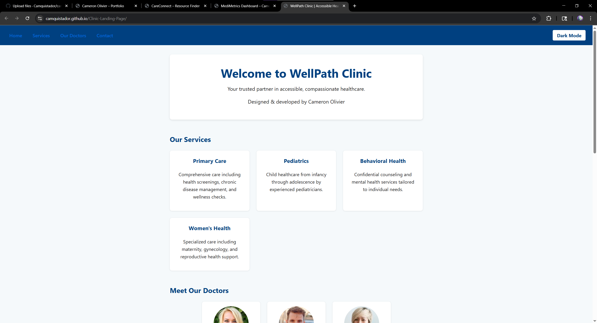
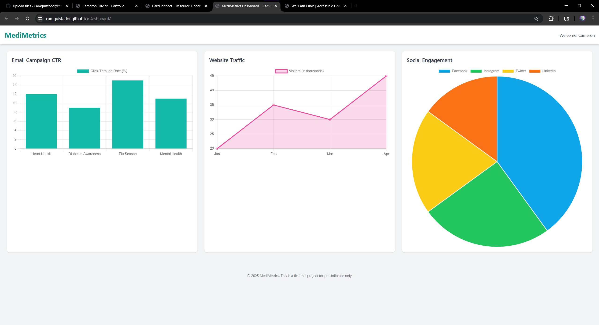
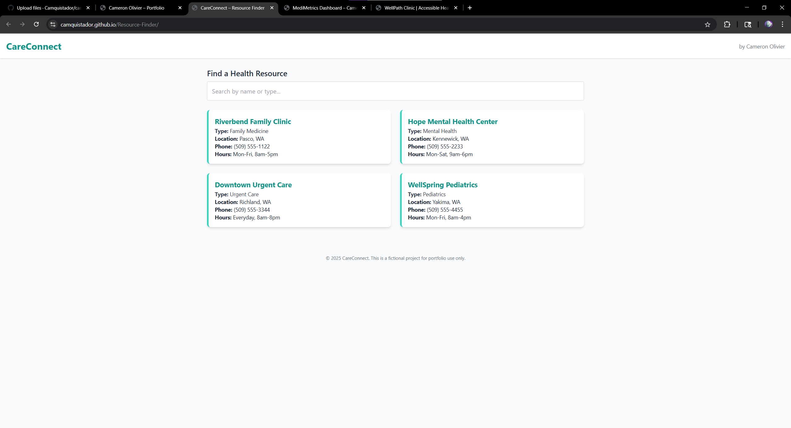

Front-End Developer
I build accessible, responsive web experiences with clean code and thoughtful design.
About Me
Hi! I’m Cameron—a front-end developer passionate about accessibility and intuitive UIs. I’ve shipped projects in healthcare tech, dashboards, and resource finders, all focus on real-world problems and WCAG-compliance.
Projects

WellPath Clinic
A WCAG-compliant healthcare landing page with dark mode, smooth scroll, and dynamic form validation.
Tech: HTML, CSS custom properties, JavaScript
Live Demo |
GitHub

CareConnect Dashboard
A data-driven, responsive dashboard with vibrant + soft theme toggle, charts, and intuitive controls.
Tech: HTML, CSS Grid/Flexbox, JavaScript
Live Demo |
GitHub

CareConnect Resource Finder
A searchable directory of community resources; clean UI, accessible forms, and lazy-loaded images.
Tech: HTML, CSS, JavaScript (fetch API)
Live Demo |
GitHub